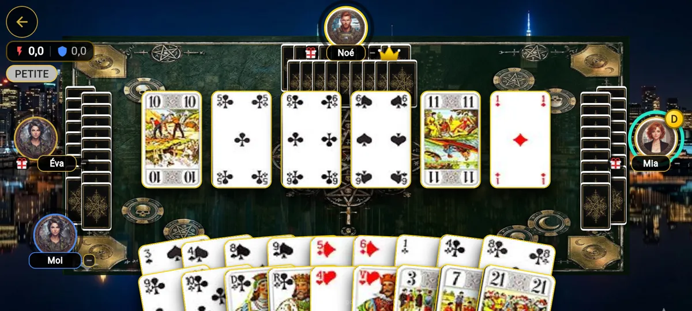
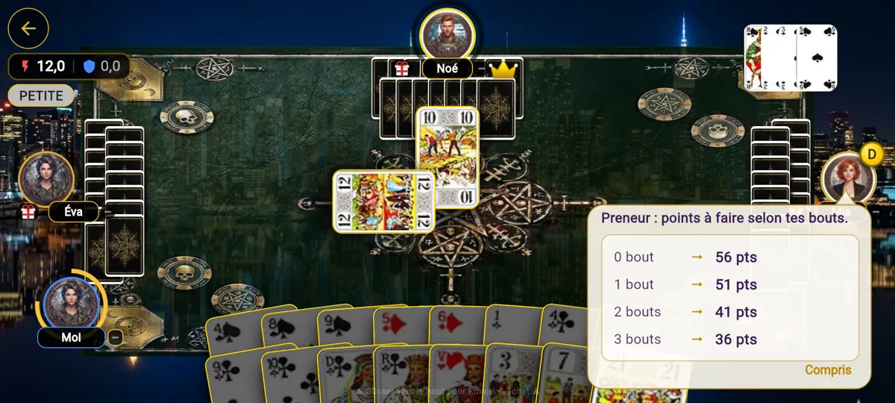

বিজ্ঞাপন ছাড়া: পর্দায় শুধু যা দরকার
ট্যারো খেলা ধারাবাহিকতায় বাঁচে। আপনি দেখেন, গোনেন, তৃতীয় তুরুপটি মনে রাখেন। দুই বণ্টনের মাঝে বাধা এলে সেই সুতো ছিঁড়ে যায়। বিজ্ঞাপনহীন মাল্টিপ্লেয়ার ট্যারো গেম সেই বাধা সরায়: গণনার পরেই পরের বণ্টন শুরু হয়।
Tarot Gothique 2026-এ এই প্রতিশ্রুতির সীমা স্পষ্ট। এটি Windows-এ, ক্রেতার অ্যাকাউন্টের জন্য এবং এক বছর পরে শেষ হয় না। ব্রাউজার, Linux ও Android-এর বিনামূল্যের সংস্করণ বিজ্ঞাপন দিয়ে চলে; তা রাউন্ডের পরে দেখানো হয়, মাঝখানে কখনও নয়।
অন্য সংস্করণে বিজ্ঞাপন কেন
কারণ সেগুলির জন্য ব্যবহারকারীকে কিছু দিতে হয় না। রক্ষণাবেক্ষণ, সার্ভার ও হালনাগাদের খরচ আছে; বিজ্ঞাপন তা মেটায়। PC সংস্করণ কিনলে ফোন থেকে তা সরে না।

মাল্টিপ্লেয়ার টেবিল: বাজি থেকে শেষ পিঠ
আপনি অংশগ্রহণকারীর সংখ্যা ও 200 থেকে 2,000 টোকেনের বাজি বেছে নেন। মাল্টিপ্লেয়ার মোড উপলব্ধ সঙ্গী খোঁজে। সবাই পালা করে বলে, সাধারণ পাস থেকে Garde contre পর্যন্ত। সবচেয়ে সাহসী জন বাকিদের মুখোমুখি হয়, একা বা পাঁচজনে ডাকা রাজার ঠিক করা গোপন মিত্রের সঙ্গে।
পাঁচজনের ট্যারো: জোটের দেশ
শুরুতে কেউ জানে না কে তার সঙ্গী। ঠিক সময়ে দামি তাস সঙ্গীকে ধরিয়ে দেয়; তুরুপ না দিলে সন্দেহ জাগে। এই অনিশ্চয়তাই মাল্টিপ্লেয়ার খেলার স্বাদ: যন্ত্রের সঙ্গে ট্যারো হিসাব করা হয়, মানুষের সঙ্গে আন্দাজ।

ফাঁকা আসন ভরে দেওয়া গেম
নতুন পরিষেবায় রাত তিনটেয় সবসময় চারজন অচেনা মানুষ মেলে না। অপেক্ষা না করিয়ে কক্ষটি ফাঁকা চেয়ার কম্পিউটারকে দেয়। ট্যারো তখনই শুরু হয়, বন্ধু পরের রাউন্ডে আসতে পারে।
ব্যক্তিগত মাল্টিপ্লেয়ার: প্রতিপক্ষ বেছে নিন
চ্যাট বা প্রোফাইল থেকে ব্যক্তিগত টেবিল তৈরি হয়। আপনি বাজি ঠিক করেন, আমন্ত্রণ পাঠান, আর সময়গণনা উত্তরের অপেক্ষা করে। অতিথিরা যেকোনো ডিভাইস থেকে আসেন: কেউ কম্পিউটারে, কেউ ব্রাউজারে, কেউ Android-এ। মাল্টিপ্লেয়ার সব সংস্করণে একই, কেনা বাধ্যতামূলক নয়।
ট্যারো টেবিল না ছেড়ে কথা বলা
অভিবাদন বা অভিনন্দনের জন্য তৈরি বাক্য ও ইমোজি যথেষ্ট। রাউন্ডের বাইরে পুরো কীবোর্ড মেলে, বিদেশি খেলোয়াড়দের জন্য অনুবাদসহ। অশোভন বার্তা দুই স্পর্শে জানানো যায়।
অনলাইন গেম: টোকেনে কী বদলায়
এই ট্যারো গেমে টোকেন বাজির কাজে লাগে, তার প্রকৃত মূল্য নেই। জিতে, দৈনিক বোনাসে বা মোবাইলে ছোট ভিডিও দেখে তা মেলে। Windows কিনলে 100,000 টোকেন পাওয়া যায়। উৎসবের মরসুমে ছাড়ের কোড তা দ্বিগুণ করে।
ট্যারোতেও সর্বস্বান্ত না হয়ে হারা
টোকেন ফুরোলে কম্পিউটারের বিরুদ্ধে গেম বাজি ছাড়াই খোলা থাকে। আত্মবিশ্বাস ফেরে, ঝুঁকির Garde চেষ্টা করা যায়, তারপর মাল্টিপ্লেয়ারে ফেরা।

বিজ্ঞাপন ছাড়া টুর্নামেন্টের তিন দিন
শুক্রবার বাছাই, শনিবার বড় প্রতিযোগিতা, রবিবার ফাইনাল। ট্যারো টেবিলে পাঁচটি আসন। র্যাঙ্কিং সরাসরি বদলায়, পোডিয়ামে টোকেন মেলে। প্রবেশমূল্য সাধারণত 200 টোকেন; PC সংস্করণের ক্রেতার জন্য ছয় মাস বিনামূল্যে, ডিসেম্বরের অফারে এক বছর।
রাত না জেগে সন্ধ্যার গেম
সন্ধ্যার নিবন্ধন মধ্যরাতের আগে বন্ধ হয়, আর সবাই দিনের যেকোনো সময়ে নিজের রাউন্ড খেলে। পুরো সপ্তাহান্ত আটকে রাখতে হয় না।
সাবস্ক্রিপশন নেই: আপনার কাছে থাকা গেম
একবার অর্থপ্রদান, মাসিক কাটা নেই। প্রকল্প যতদিন এগোয়, Windows-এর পরের সংস্করণ বাড়তি খরচ ছাড়াই আসে। দোকান থেকে কেনা বাক্সের মতো, সংশোধনসহ।
বিজ্ঞাপন ছাড়া ট্যারোর স্মৃতি ভালো থাকে
তুরুপ গোনা, কে হরতন কেটেছে মনে রাখা, ফেলা তাস আন্দাজ করা: ট্যারো মনোযোগের পুরস্কার দেয়। বিজ্ঞাপন ও হঠাৎ জানালা না থাকলে মনোযোগ রাউন্ডের পর রাউন্ড টেকে। একা খেললে ছোট ব্যাপার; মাল্টিপ্লেয়ার টেবিলে, যেখানে সবাই ভুলের অপেক্ষায়, এটি সত্যিকারের আরাম। শান্ত পরিবেশ নতুনদেরও সাহায্য করে: গণনা আবার পড়ে হার বোঝা যায়।
বিনামূল্যের গেম থেকে বিজ্ঞাপন ছাড়া গেমে
বদলে কিছু হারায় না: একই অ্যাকাউন্ট, একই বন্ধু, একই টোকেন। কেনা সংস্করণ প্রথম লগইনেই প্রোফাইল চিনে নেয়, মাল্টিপ্লেয়ার সেখান থেকেই চলে, এবার বিজ্ঞাপন ছাড়া।
এই মাল্টিপ্লেয়ার ট্যারো কার জন্য?
যে নিয়মিত খেলোয়াড় বিজ্ঞাপন পছন্দ করেন না। যে পরিবার একটি কম্পিউটার ভাগ করে। যে প্রাক্তন ক্লাব সদস্য দূরের বন্ধুদের সঙ্গে নিয়মিত মাল্টিপ্লেয়ার চান। মাসে দু’বার তাস বাঁটলে অল্প বিজ্ঞাপনসহ বিনামূল্যের গেম যথেষ্ট: আগে ব্রাউজারে চেষ্টা করুন।
বিজ্ঞাপন ও টেবিল নিয়ে ছোট উত্তর
সংযুক্ত থাকতে হবে? মাল্টিপ্লেয়ার খেলতে হ্যাঁ; কেনার স্বীকৃতি কম্পিউটারে থাকে।
আমার ফোন কি বিজ্ঞাপন মুক্ত হবে? না, শুধু Windows সংস্করণ।
দুটি কম্পিউটার, একটি অ্যাকাউন্ট? দুটিতেই কেনার অ্যাকাউন্টে লগইন করুন।
নির্মাতার লেখা; পাঠ্য ও আবহচিত্র কৃত্রিম বুদ্ধিমত্তার সাহায্যে। ছবিগুলি কম্পিউটারের বিরুদ্ধে খেলার, ইন্টারফেস ফরাসি।